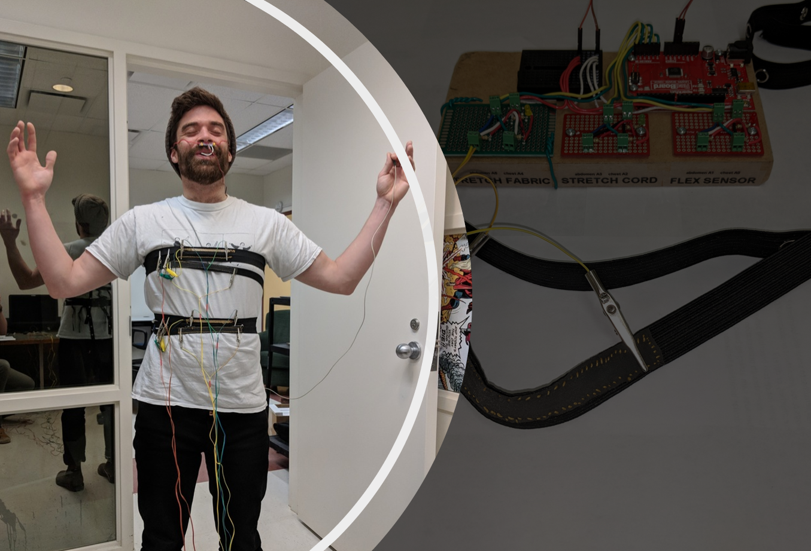

Development and
Data Science Projects

I have experience completing development projects using a wide range of technologies. Many of my projects have been completed in a research context, and included a substantial amount of data science and analysis.
The Falling of Momo is a muscle training game used by amputee patients. The game was awarded "Best Game" at CHIPlay 2016, a premiere academic conference on games and play.
Myostream is a Java-based bluetooth streaming library for EMG input devices, such as the Myo armband developed by Thalmic Labs (shown above).
Bubble Breather is a respiratory therapy game that supports pneumonia recovery and other respiratory conditions. The game was awarded "Best Physical Experience" at CHIPlay 2020, a premiere academic conference on games and play.

Breathing Sonar JS is a proof-of-concept JavaScript utility that leverages state of the art research to provide wireless breath sensing on commodity devices using a sonar-based sensing approach.

HRV-b is a stress-reducing breathing exercise that leverages physiological information derived from our heart rate. In this project, I interface a commercial bluetooth heart rate monitor and develop data visualizations to support the exercise.

In this project, I prototyped three simple breath sensing bands and evaluated their accuracy. The project was completed using commodity prototyping electronics and was developed with an Arduino UNO.
In this project, I developed python and C++ based memory management simulators to explore how different garbage collection policies influence performance on the JVM and in other high-level programming languages.

In this project, I scrape information from the Steam gaming community to predict player personality traits. This model could be used to track player behavior over time and detect early symptoms of personality disorders like depression.